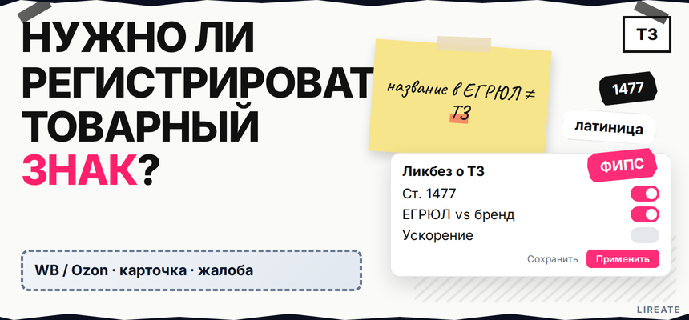
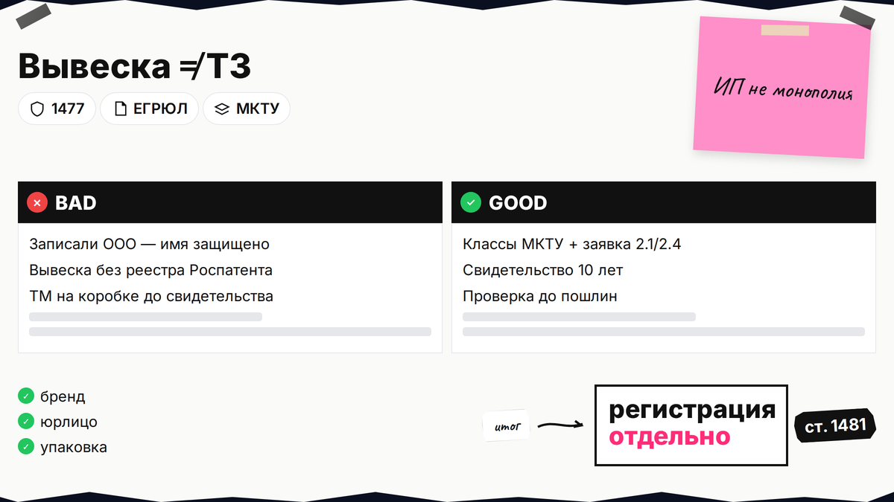
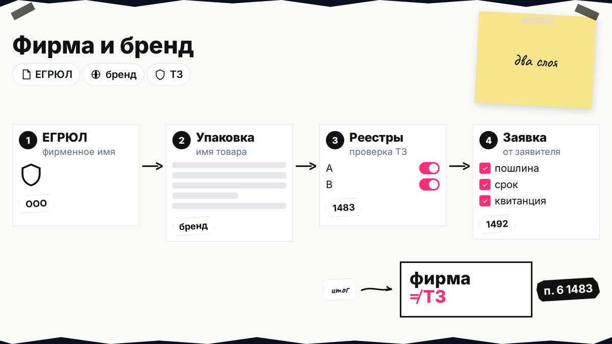
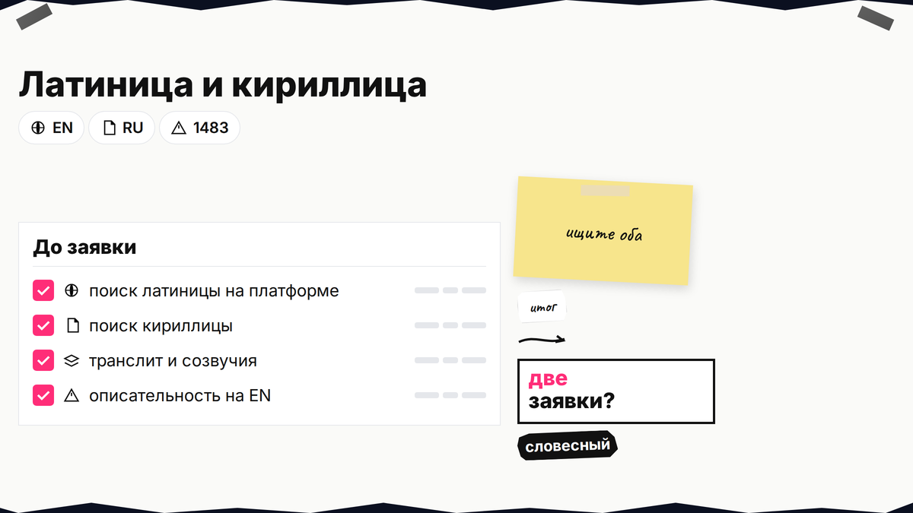

Название уже на вывеске и в карточках маркетплейса, а в поиске всплывает вопрос: нужно ли регистрировать товарный знак или хватит ИП и записи в ЕГРЮЛ. Короткий ответ: закон не требует ТЗ каждому, но без регистрации вы не получаете монополию на обозначение в выбранных классах МКТУ (международная номенклатура товаров и услуг). Ниже вы поймёте что такое товарный знак простыми словами, чем он отличается от названия компании, можно ли оформить имя латиницей, когда имеет смысл ускорение экспертизы и куда перейти за пошаговой подачей без дублирования инструкций из других материалов.

TL;DR / Быстрый инсайт: Товарный знак - зарегистрированное обозначение, которым вы отмечаете товар или услугу и запрещаете чужим использовать сходное имя в одних классах МКТУ после регистрации (ст. 1477, ст. 1481). Название в ЕГРЮЛ и вывеска сами по себе это не дают. Латиница и кириллица часто живут как разные заявки: английское слово оформляют отдельно, если бренд на латинице. Ускорение - не «скидка по ст. 1401 ГК РФ» (эта норма про секретные изобретения), а платный поиск ФИПС + регламент Роспатента; стандартный предельный срок услуги - около 18 месяцев и 2 недель (карточка госуслуги). Пошаговая подача — в инструкции по самостоятельной регистрации, проверка реестров — в чек-листе перед подачей.
Материал для ИП, ООО и самозанятых, которые выбирают стратегию бренда. Нормы ГК РФ и пошлины сверены на 09.11.2026; это не индивидуальная юридическая консультация и не обещание регистрации.
По ст. 1477 ГК РФ товарный знак - слово, логотип, упаковка или другой ярлык, который отличает ваш товар или услугу от чужих. Монополия на обозначение в классах МКТУ возникает после регистрации (ст. 1481), а не с момента открытия ИП. Регистрация - заявка, две экспертизы по ст. 1499 и свидетельство на 10 лет; основания отказа - ст. 1483.
Делайте: думать о ТЗ как о «правах на имя в конкретных классах товаров». Не делайте: путать регистрацию с покупкой домена или созданием карточки бренда на WB.

Закон не штрафует за торговлю без ТЗ. Риск в другом: конкурент может зарегистрировать сходное имя и оспорить вашу упаковку, рекламу или маркетплейс. Регистрация - страховка, когда бренд становится активом.
| Ситуация | Нужен ли ТЗ | Почему |
|---|---|---|
| Локальный микробизнес без планов масштаба | Часто можно отложить | Меньше ущерба при смене имени, но проверка в реестрах всё равно разумна |
| Маркетплейсы, франшиза, опт, экспорт | Да, обычно | Чужой знак в тех же классах → претензии по 1483 и споры о сходстве |
| Инвестиции в рекламу, логотип, дистрибуцию | Да | Рекламный бюджет без ТЗ привязан к имени, которое могут оспорить |
| Работа под чужим брендом (контракт, лицензия) | Не вы | Охрана у правообладателя; своя заявка может нарушить его права |
Делайте: оценить горизонт 1–3 года и бюджет на имя. Не делайте: откладывать, если копируют карточки — заранее проверьте что делать, если товарный знак занят.

Фирменное наименование в ЕГРЮЛ - для договоров. Товарный знак - имя на товаре. Права разные; спор «похожих брендов» чаще идёт по п. 6 ст. 1483 и раннему ТЗ конкурента.
Делайте: сверять заявителя ТЗ с тем, кто использует бренд в договорах. Не делайте: считать запись в ЕГРЮЛ защитой от сходного знака на маркетплейсе.

Можно ли зарегистрировать товарный знак на английском языке (латиницей)? Да, если обозначение не описывает товар, не вводит в заблуждение и не сходно с ранними знаками в тех же классах (ст. 1483). Латинские буквы, цифры и стандартные знаки препинания обычно допустимы в словесном знаке, если это не запрещённый государственный символ и не чужой охраняемый элемент.
Кириллица и латиница при сходстве сравниваются как разные написания: «COFFEELAB» и «КОФИЛАБ» не схлопываются в одну заявку. В чек-листе по реестрам ищут оба алфавита и транслит.
Делайте: подавать латиницу осознанно, если бренд реально на английском. Не делайте: надеяться, что одна кириллическая заявка закроет домен .com и латинский логотип.
Даже когда нужно регистрировать знак, заявку могут остановить по абсолютным основаниям (описательность, обман, банальная картинка) или по сходству с чужим ТЗ в однородных товарах (п. 1–6 ст. 1483). Самостоятельный фильтр — чек-лист проверки перед подачей; ответ на уведомление — как ответить экспертизе при отказе.
Госпошлины 2.1, 2.4 и 2.11 за один класс — по таблице Роспатента: 35 000 ₽ (4 000 + 13 000 + 18 000) независимо от способа подачи; свидетельство выдаётся в электронном виде, бумажный экземпляр — по п. 2.14 (3 000 ₽, см. приложение № 1 к ПП РФ № 941). Подробный расчёт — в руководстве по самостоятельной регистрации. При отказе деньги обычно не возвращаются; проверка в реестрах до оплаты обязательна.
Делайте: сохранять номера чужих знаков и заявок из поиска. Не делайте: игнорировать «жёлтую зону» сходства - доработка имени до заявки дешевле, чем серия отказов.
Сроки: предельный срок услуги - 18 месяцев и 2 недели (Госуслуги, ст. 1499). Ускорение - заказной поиск в ФИПС (тариф в приказе № 161) с приложением результатов к заявке; первое решение иногда укладывается в 2–3 месяца, если нет долгой переписки по ст. 1497. Ст. 1401 к ТЗ не относится (секретные изобретения); тариф поиска - в приложениях к приказу Роспатента № 161, госпошлины остаются.
Маршруты:
Стандарт: проверка в реестрах → подача заявки → 2.1 + 2.4 + 2.11 (35 000 ₽ за 1 класс).
Ускорение: проверка в реестрах → заказной поиск ФИПС → заявка с результатами → те же пошлины → решение по 1499 быстрее, если нет длинной переписки.
Делайте: ускорение только при понятной экономике времени. Не делайте: считать ускорение «гарантией регистрации» - отказ приходит быстрее, если знак слабый по 1483.
Подача — в инструкции по самостоятельной регистрации, реестры — в чек-листе проверки перед подачей, рубрика — «Товарный знак».
Материал проверен: редакция Лирейт, ст. 1477, 1481, 1483, 1497, 1499 ГК РФ, таблица пошлин на Госуслугах и описание поиска на rospatent.gov.ru.
Достоверность данных: редакционная проверка на 09.11.2026. Показы Яндекс Вордстат в материал не включались: в среде подготовки инструмент был недоступен.
Регистрация юрлица не заменяет товарный знак: в ЕГРЮЛ закреплено фирменное наименование, а монополия на обозначение товара возникает после регистрации ТЗ в Роспатенте в выбранных классах МКТУ.
Это официально зарегистрированное имя или картинка на товаре или услуге, которое отличает вас от конкурентов и после регистрации даёт право запрещать сходные обозначения в тех же классах.
Название компании служит для договоров и ЕГРЮЛ, а товарный знак маркирует продукт для покупателя. Совпадение слов возможно, но права и способы защиты разные; конфликты чаще проверяют по реестру ТЗ и ст. 1483.
Да, словесный знак латиницей допустим, если он не описательный и не сходен с ранними знаками в однородных товарах. Кириллическая и латинская версии обычно проходят отдельную проверку и при необходимости оформляются отдельными заявками.
Через заказ ускоренного поиска в ФИПС с прикреплением результатов к заявке по правилам Роспатента; стандартные пошлины 2.1, 2.4 и 2.11 остаются (35 000 ₽ за один класс). Это сокращает срок экспертизы, но не отменяет отказ по ст. 1483.
Нет: ст. 1401 ГК РФ про подачу заявок на секретные изобретения. Для товарных знаков сроки и ускорение смотрите в административном регламенте, ст. 1497–1499 и тарифах ФИПС на поиск обозначений.
Пока нет конфликта с чужим ТЗ, торговля возможна. В споре сильнее тот, у кого свидетельство в нужных классах; тактика оспаривания — в руководстве по возражению против регистрации.